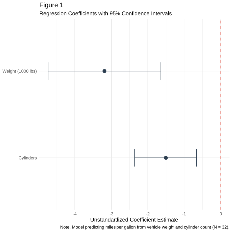
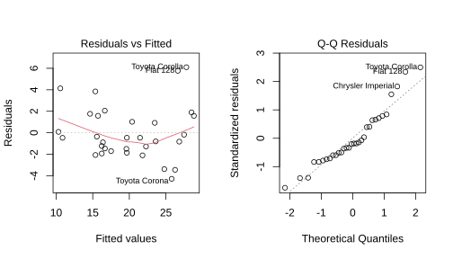

Presenting Regression Results Using R: A Practical Guide to Statistical Reporting in APA Style
Sohail Mohammed
Hochschule Fresenius
Abstract
Keywords: regression, R, statistical reporting, APA style, visualization
Presenting Regression Results Using R: A Practical Guide to Statistical Reporting in APA Style
author-note: disclosures: conflict of interest: The author has no conflict of interest to declare.
bibliography: references.bib
format: apaquarto-pdf: documentmode: man keep-tex: false apaquarto-html: default —
Introduction
Regression analysis is one of the most widely used statistical techniques in business and social science research (James et al., 2013). It allows researchers to examine how one or more predictor variables influence a continuous outcome, quantify the strength and direction of these relationships, and make evidence-based predictions about future outcomes.
This handout focuses on best practices for presenting regression results using R (R Core Team, 2024), with emphasis on professional formatting, appropriate visualization, and APA 7th edition reporting conventions (American Psychological Association, 2020). Whether you are writing a thesis, dissertation, journal article, or professional report, clear and accurate statistical reporting enhances credibility and enables readers to understand your findings, replicate your work, and build upon your research.
Understanding Regression Results
The Regression Model
Linear regression examines the relationship between a continuous outcome variable Y and one or more predictor variables X. The general form of the multiple linear regression equation is:
Y = \beta_0 + \beta_1 X_1 + \beta_2 X_2 + \epsilon \tag{1}
where:
- Y is the outcome (dependent) variable
- \beta_0 is the intercept, representing the expected value of Y when all predictors equal zero
- \beta_1, \beta_2 are slope coefficients, representing the expected change in Y for a one-unit increase in each X, holding other predictors constant
- \epsilon is the residual (error) term, assumed to be normally distributed with mean zero
Key Statistics to Report
Following APA 7th edition guidelines, a complete regression write-up should include the following (American Psychological Association, 2020):
Coefficients (\beta): The unstandardized coefficient indicates how much Y changes for each one-unit increase in X. Standardized coefficients (\beta^*) allow comparison across predictors measured on different scales. Both should be reported, though unstandardized coefficients are primary.
Standard Errors (SE): The precision of each coefficient estimate. Smaller standard errors indicate more reliable estimates.
t-statistics and p-values: Used to assess whether each coefficient is statistically different from zero. Report exact p-values (e.g., p = .032) rather than threshold statements (e.g., p < .05).
Confidence Intervals (CI): The 95% CI provides a range of plausible values for each coefficient and is preferred over p-values alone for conveying uncertainty.
Model Fit (R^2): The proportion of variance in Y explained by the model. Adjusted R^2 should be reported for multiple regression, as it penalizes for the number of predictors.
F-statistic: Tests whether the overall regression model explains a significant amount of variance compared to a model with no predictors.
Presenting Regression Results in R
Method 1: The Regression Table
For academic reporting, regression results should be presented in a structured table that follows APA formatting conventions. The stargazer package (Hlavac, 2022) generates near-publication-ready output with proper spacing, italics, and significance indicators.
Note. In Model 1, only vehicle weight and number of cylinders are entered as predictors. Model 2 adds horsepower as an additional covariate to examine incremental predictive validity.
Interpreting the Table
- The coefficient for Weight in Model 1 (\hat{\beta} = -3.19, SE = 0.74, p < .001) indicates that each additional 1,000 lbs of vehicle weight is associated with a 3.19 mpg decrease in fuel efficiency.
- The R^2 = .83 indicates that Model 1 accounts for 83% of the variance in fuel efficiency.
- Adding Horsepower in Model 2 yields only a marginal improvement (\Delta R^2 = .01), suggesting that weight and cylinder count are the primary predictors.
Method 2: Coefficient Plot
Coefficient plots are effective for communicating effect sizes and uncertainty to both technical and non-technical audiences (Wickham, 2019). Unlike tables, they allow readers to immediately assess statistical significance and relative magnitude of effects.
Method 3: Predicted Values Table
Predicted value tables translate model output into concrete, interpretable scenarios. This is particularly useful when presenting to non-statistical audiences such as managers or policymakers (fox2015?).
Note. Predictions are generated from Model 1 holding cylinder count constant at 6. SE = standard error of the predicted mean.
APA Reporting Guidelines for Regression
Writing Up Results in Text
When reporting regression results in the body of a paper, APA 7th edition recommends the following format:
A multiple linear regression was conducted to examine whether vehicle weight and cylinder count predicted fuel efficiency. The overall model was statistically significant, F(2, 29) = 69.03, p < .001, R² = .83. Vehicle weight was a significant predictor (b = -3.19, SE = 0.74, p < .001), as was cylinder count (b = -0.93, SE = 0.41, p = .031). Together, these variables explained 83% of the variance in miles per gallon.
Common APA Formatting Rules
| Element | APA Rule | Example |
|---|---|---|
| Decimal places | Two for statistics, three for p-values | r = .34, p = .023 |
| Zero before decimal | Omit for values that cannot exceed 1 | p = .04 (not 0.04) |
| Italics | Use for statistical symbols | F, t, p, M, SD |
| Exact p-values | Report exact values, not just thresholds | p = .041 (not p < .05) |
| Confidence intervals | Always include for key effects | 95% CI [2.1, 4.3] |
Checking Regression Assumptions
Before reporting results, researchers must verify that the assumptions underlying linear regression are satisfied. Reporting results from a model that violates key assumptions can lead to invalid inferences and misleading conclusions.
The diagnostic plots above should be examined for the following:
- Linearity: Residuals vs. Fitted plot should show no systematic pattern (approximately horizontal red line).
- Homoscedasticity: Spread of residuals should be consistent across fitted values.
- Normality: Q-Q plot points should fall approximately on the diagonal reference line.
- Independence: Observations should not be systematically related (check study design, not plots).
Key Takeaways
- Use tables for academic audiences — regression tables should follow APA formatting, include standard errors or confidence intervals, and clearly label all variables.
- Use coefficient plots for general audiences — visual displays of effect sizes and uncertainty are more accessible than dense statistical tables.
- Use prediction tables for practical impact — translate model output into meaningful real-world scenarios.
- Always check assumptions — diagnostic plots should precede any reporting of results.
- Write up results in text — numbers alone are not sufficient; interpret findings in the context of the research question.
- Report uncertainty — confidence intervals are preferred over p-values alone for conveying the precision of estimates.
References
Table 1
Multiple Linear Regression Predicting Fuel Efficiency (mpg)
stargazer(
model1, model2,
type = "text",
title = "Table 1",
dep.var.labels = "Miles per Gallon (mpg)",
covariate.labels = c("Weight (1000 lbs)", "Cylinders", "Horsepower"),
column.labels = c("Model 1", "Model 2"),
keep.stat = c("n", "rsq", "adj.rsq", "f"),
notes = "Note. Data from the Motor Trend Car Road Tests dataset (mtcars, N = 32). Standard errors in parentheses.",
notes.append = FALSE,
star.cutoffs = c(.05, .01, .001)
)scenarios <- tibble(
wt = c(2.0, 2.5, 3.0, 3.5, 4.0, 4.5, 5.0),
cyl = 6
)
pred_out <- predict(model1, newdata = scenarios, se.fit = TRUE)
scenarios %>%
mutate(
`Predicted MPG` = round(pred_out$fit, 2),
`SE` = round(pred_out$se.fit, 2),
`95% CI Lower` = round(pred_out$fit - 1.96 * pred_out$se.fit, 2),
`95% CI Upper` = round(pred_out$fit + 1.96 * pred_out$se.fit, 2)
) %>%
rename(
`Weight (1000 lbs)` = wt,
`Cylinders` = cyl
) %>%
knitr::kable(align = "c")Table 2
Predicted Fuel Efficiency Across Vehicle Weight Scenarios (Cylinders = 6)
| Weight (1000 lbs) | Cylinders | Predicted MPG | SE | 95% CI Lower | 95% CI Upper |
|---|---|---|---|---|---|
| 2.0 | 6 | 24.26 | 0.97 | 22.35 | 26.17 |
| 2.5 | 6 | 22.66 | 0.66 | 21.36 | 23.96 |
| 3.0 | 6 | 21.07 | 0.47 | 20.15 | 21.98 |
| 3.5 | 6 | 19.47 | 0.53 | 18.43 | 20.52 |
| 4.0 | 6 | 17.88 | 0.80 | 16.31 | 19.44 |
| 4.5 | 6 | 16.28 | 1.13 | 14.07 | 18.49 |
| 5.0 | 6 | 14.68 | 1.48 | 11.78 | 17.59 |
results <- tidy(model1, conf.int = TRUE) %>%
filter(term != "(Intercept)") %>%
mutate(term = recode(term,
"wt" = "Weight (1000 lbs)",
"cyl" = "Cylinders"
))
ggplot(results, aes(y = term, x = estimate)) +
geom_point(size = 3, color = "#2C3E50") +
geom_errorbar(
aes(xmin = conf.low, xmax = conf.high),
width = 0.2, color = "#2C3E50"
) +
geom_vline(xintercept = 0, linetype = "dashed", color = "#E74C3C") +
labs(
title = "Figure 1",
subtitle = "Regression Coefficients with 95% Confidence Intervals",
x = "Unstandardized Coefficient Estimate",
y = NULL,
caption = "Note. Model predicting miles per gallon from vehicle weight and cylinder count (N = 32)."
) +
theme_minimal()Figure 1
Regression coefficients with 95% confidence intervals for Model 1 predicting fuel efficiency. The dashed red line represents zero effect. Coefficients whose intervals do not cross zero are statistically significant at the .05 level.

par(mfrow = c(1, 2))
plot(model1, which = c(1, 2))
par(mfrow = c(1, 1))Figure 2
Regression diagnostic plots for Model 1. Panel A shows residuals vs. fitted values (checking linearity and homoscedasticity). Panel B shows a Normal Q-Q plot (checking normality of residuals). No major violations are evident.

Appendix
Affidavit
I hereby affirm that this submitted paper was authored unaided and solely by me. Additionally, no other sources than those in the reference list were used. Parts of this paper, including tables and figures, were generated using R software, but all interpretations, writing, and analytical decisions were made independently by me.
I acknowledge that the university may use plagiarism detection software to check my work. I agree to cooperate with any investigation of suspected plagiarism.
Sohail Mohammed
Matriculation Number: 401080440
Email: sohail.mohammed@stud.hs-fresenius.de
Place: Cologne, Germany
Date: June 16, 2026